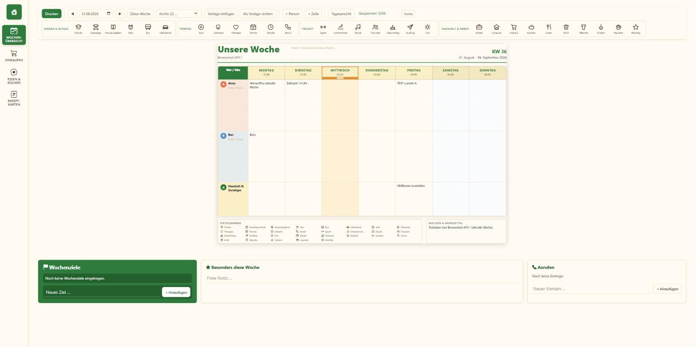
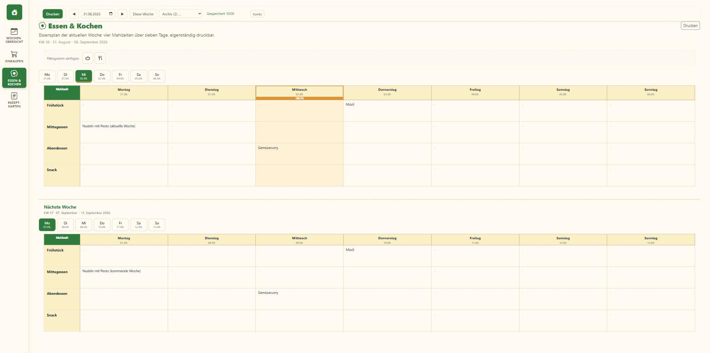
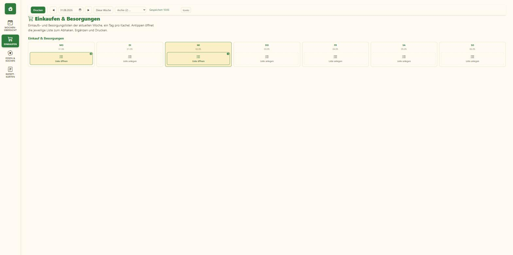
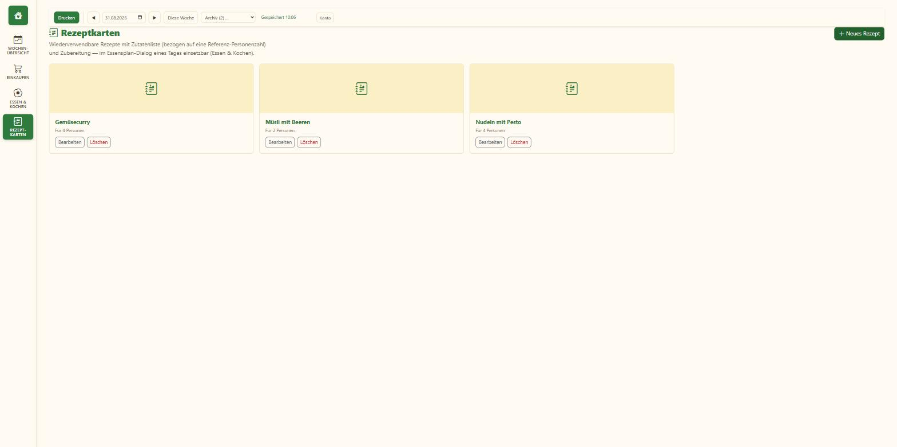

Termine, Schule, Essensplan, Einkaufsliste und Rezepte an einem Ort — gemeinsam am Rechner ausfüllen, auf A4 ausdrucken und ans Küchenbrett hängen, oder unterwegs vom Handy nachschauen.
Jetzt anmeldenEin gemeinsames Raster für jedes Familienmitglied — mit Piktogrammen statt langer Texte, damit auch Kinder auf einen Blick verstehen, was ansteht.
Eine Zeile pro Person, sieben Tage im Blick — Schule, Termine, Freizeit und Haushalt übersichtlich per Piktogramm eingetragen.
Frühstück, Mittag- und Abendessen für die ganze Woche planen — inklusive Vorschau auf die kommende Woche.
Eine Einkaufsliste pro Tag, zum Abhaken auf dem Handy oder zum Ausdrucken für den nächsten Supermarktbesuch.
Lieblingsrezepte mit Zutatenliste hinterlegen und direkt einem Tag im Essensplan zuweisen — die Menge wird automatisch skaliert.
Ein Klick genügt: die Woche als sauberes, klassisches A4-Blatt für die Pinnwand oder den Kühlschrank.
Screenshots aus der laufenden App — kein Mockup, sondern die echte Wochentafel.
Eine Zeile pro Person, sieben Tage im Blick. Schule, Termine, Freizeit und Haushalt werden per Piktogramm eingetragen — kein Fließtext, den erst jemand vorlesen muss.

Frühstück, Mittag- und Abendessen für die ganze Woche geplant, inklusive Vorschau auf die kommende Woche — niemand steht ratlos vor dem Kühlschrank.

Eine Einkaufsliste pro Tag: zum Abhaken auf dem Handy im Supermarkt oder ausgedruckt am Kühlschrank.

Lieblingsrezepte mit Zutatenliste hinterlegt und direkt einem Tag im Essensplan zugewiesen — die Menge wird automatisch für die Familiengröße skaliert.

Kostenlos für den eigenen Haushalt einrichten — Anmeldung dauert eine Minute.
Jetzt anmelden